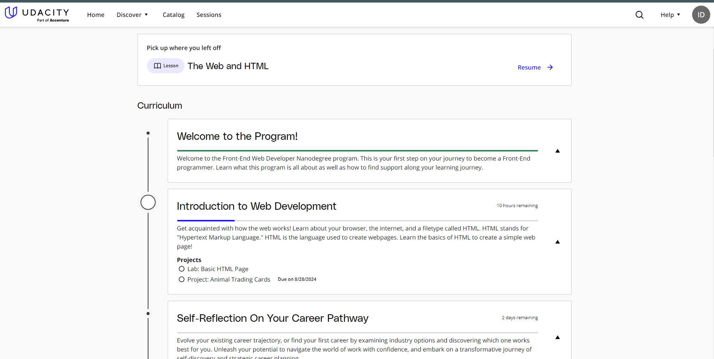

Practice Web Page!
This is the beginning of my front-end web development journey with Udacity.
My HTML notes.
Markup is a special text element in the text editor used to structure the text of the web-page.
Definitions from Udacity:
-
Code that tells the browser what the text on a web page should look
like is a Markup.
-
Rules having to do with how the parts of a language can be put
together are called the Syntax.
-
The idea that some bits of code can go inside other bits of code is
called Nesting.
-
Text that can have links or references is called
Hypertext.
- A general term for spaces, tabs, and line breaks is a Whitespace.
An Ordered List
- Learn HTML.
- Learn CSS.
- Learn Python.
- Save the wolrld.
An Unordered List
- web-element
- a tag
- whitespace
- paragraph
The browser knows when to close the element because a new starting
element cannot be inside of the same last element.
The type attribute for "ol" offers several options for list item markers:
The type attribute for "ol" offers several options for list item markers:
- "1" for numbers (the default)
- "A" for uppercase letters
- "a" for lowercase letters
- "I" for uppercase Roman numerals
- "i" for lowercase Roman numerals


The Four Biggest Countries Of All The Continents:
-
Africa:
- Algeria
- Congo
- Sudan
- Libia
-
Asia:
- Russia
- China
- India
- Kazakhstan
-
Europe:
- Russia
- Ukraine
- France
- Sweden
-
North America:
- Canada
- USA
- Mexico
- Greenland
-
South America:
- Brazil
- Argentina
- Peru
- Chilie
-
Oceania:
- Australia
- Papua New Guinea
- New Zealand
- Solomon Islands
You can learn more about the continents following the Link
Also, here is the very interesting map of all the continents